What Actually Happens When You Talk to an LLM
You type a prompt, hit Enter, and a few seconds later words start streaming back. But what happens in between? The answer involves more machinery than most people realize — authentication gates, context assembly, tokenization, a transformer doing next-token prediction in a loop, safety filters, and sometimes an entire agentic cycle where the model uses tools and feeds results back into itself.
This post walks through the full journey of a prompt, from keystroke to response, in ten steps. Each section has a small diagram you can use as a mental anchor. By the end, you'll have a clear map of the entire pipeline — not just the "AI magic" part, but all the infrastructure around it.
The diagram above is your roadmap. Your message passes through a gateway, gets assembled into context, enters the thinking engine, passes through safety checks, and arrives back as a response. Let's zoom into each stage.
1. The Bouncer at the Door
Before your prompt gets anywhere near a neural network, it has to pass through a gauntlet of checks. Think of this as the bouncer at a nightclub — you need the right credentials, you can't show up too often, and you'd better not be causing trouble.

Authentication comes first. Are you who you say you are? API keys, OAuth tokens, or session cookies get validated. If you're using ChatGPT through the web, your browser session handles this invisibly. If you're hitting the API directly, your key gets checked against a database.
Rate limiting is next. Even authenticated users can't send unlimited requests. This protects the service from abuse and ensures fair access. If you've ever gotten a "too many requests" error, you've hit this wall.
Content moderation scans your input for things the service doesn't want to process — personally identifiable information that shouldn't be forwarded, content that violates terms of service, or other policy violations. This is a fast classifier, not the main model.
Prompt injection detection is the newest gate. This checks whether your input is trying to trick the model into ignoring its instructions. For example, if your message contains "ignore all previous instructions and…", a dedicated detector might flag it before the main model ever sees it.
If your request passes all four checks, it moves on. If any check fails, you get an error response — and the main model never sees your prompt at all.
2. Picking the Right Brain
Not every question needs the same model. Asking "what's 2+2?" doesn't require the same computational firepower as "write me a recursive algorithm to solve the traveling salesman problem." Modern LLM services use routing to match requests to the right model.

The first thing the router checks is the cache. If someone recently asked the exact same question (or something semantically close enough), the system can return the cached response instantly. This is a huge win for latency and cost — the model doesn't need to run at all.
For cache misses, a model router classifies the request by complexity. Simple queries — factual lookups, basic formatting, short translations — get routed to smaller, faster models. Complex queries — multi-step reasoning, creative writing, code generation — go to larger, more capable (and more expensive) models.
This routing happens in milliseconds and is invisible to you. When you use services like Claude or ChatGPT, you might be explicitly choosing a model, but behind the scenes there's still routing logic deciding how to handle your request efficiently.
3. Setting the Stage
Here's something that surprises most people: your message is a minority of what the model actually sees. By the time the model processes your request, your prompt has been combined with a lot of other text into a single "context window."

The system prompt comes first. This is the instruction set that tells the model how to behave — its personality, capabilities, restrictions, and formatting preferences. When you talk to ChatGPT, Claude, or any other assistant, there's a system prompt you never see that shapes every response. It can be hundreds or thousands of words long.
Conversation history follows. If you've been chatting back and forth, all the previous messages (yours and the model's) get included so the model has context. This is why the model "remembers" what you said earlier in a conversation — it's literally re-reading the entire conversation every time.
Tool definitions tell the model what it can do besides generate text. Can it search the web? Run code? Call APIs? These definitions are described in structured text that the model reads and understands.
Retrieved context from RAG (Retrieval-Augmented Generation) adds relevant documents or data that were fetched specifically for your query. If you ask about a company's return policy, a RAG system might fetch the actual policy document and inject it into the context.
Finally, your message goes in at the end. In a typical conversation turn, your actual question might be 20 words out of a context window containing 5,000+ words. The model processes all of it together — it doesn't distinguish between "system instructions" and "user message" at the neural network level. It's all just tokens.
4. Tokens, Not Words
Here's another thing that surprises people: LLMs don't read words. They read tokens — numeric chunks that roughly correspond to word pieces. The word "understanding" might be two tokens ("under" + "standing"), while common words like "the" are single tokens. Even spaces and punctuation are tokens.
The tokenizer converts your assembled context (system prompt + history + tools + RAG + your message) into a sequence of numbers. Each number maps to an entry in a fixed vocabulary — typically 50,000 to 100,000 entries. The text "Hello world" might become [15496, 995].
These numbers are what the transformer actually processes. It doesn't see letters or words — it sees a sequence of integers, each representing a chunk of text.
On the output side, the transformer produces new token IDs one at a time. The detokenizer converts each number back into text characters and streams them to you. This is why you sometimes see words appear in chunks rather than letter by letter — each chunk is one token being decoded.
A practical consequence: models are billed by tokens, not by words. A 1,000-word prompt might be 1,300 tokens, depending on the vocabulary. Different tokenizers produce different token counts for the same text, which is why token limits vary between models.
5. The Heart of the Machine
This is the part most people think of when they hear "AI" — the transformer neural network. But the core mechanism is simpler to describe than you might expect: everything is next-token prediction.

The transformer takes a sequence of tokens and predicts what token comes next. That's it. The entire magic of language models — writing poetry, solving math, generating code — emerges from this one operation repeated thousands of times.
Here's how one step works:
Attention is the transformer's core innovation. For each position in the sequence, the model calculates which other tokens are most relevant. When generating a response to "What's the capital of France?", the attention mechanism learns that "capital" and "France" are the most important tokens for predicting the next word. This happens across many "heads" in parallel, each head learning to focus on different relationships.
The feed-forward network takes the attention output and transforms it through learned mathematical functions. This is where the model's "knowledge" lives — facts, patterns, and reasoning abilities encoded in billions of numeric weights.
Sampling takes the transformer's output (a probability distribution over all possible next tokens) and picks one. With low temperature, the model picks the most likely token (deterministic, predictable). With high temperature, it samples more randomly (creative, varied). The "top-p" and "top-k" settings further control how many candidates the model considers.
The new token gets appended to the sequence, and the whole process repeats. Generate the next token. And the next. And the next. Until the model produces a stop token or hits the maximum length.
This is why streaming works — each token can be sent to you the moment it's generated, because the model doesn't know what the whole response will be. It's writing one token at a time, just like you might write one word at a time.
6. Thinking Out Loud
Modern LLMs don't just blast out answers. The best ones reason through problems step by step, and they can catch and correct their own mistakes mid-thought. This is "extended thinking" or "chain-of-thought reasoning."

The model generates hidden "thinking tokens" — scratchpad text that you don't see in the final response but that guides the model's reasoning. Here's what happens in that hidden scratchpad:
The model reasons step by step, writing out its logic in natural language. "The user is asking about X. I know that X relates to Y because Z. Let me work through this…"
At each step, it self-checks. The model literally writes things like "Wait, that's not right" or "Let me reconsider" in its token stream. This isn't a separate module — it's the same next-token prediction, but the model has been trained to be self-critical.
If it detects an error, it backtracks. "Actually, I made a mistake in step 2. The correct approach is…" The model revises its reasoning by writing the correction into the token stream, which then constrains all subsequent tokens.
There's also a confidence gate. If the model isn't sure enough about its answer, it deepens its analysis: "Let me think about this more carefully…" or "Let me consider an alternative approach…" This loop can repeat several times for hard problems.
The key insight: the model isn't running separate "thinking" and "answering" programs. It's all next-token prediction. The thinking tokens simply steer the probability distribution for the answer tokens that follow. Writing "Wait, that's wrong" literally changes what the model predicts next.
7. Hands and Eyes
Plain text generation is powerful, but it has limits. The model can't check today's weather by reasoning about it — it needs to actually look it up. This is where tool use turns an LLM from a text generator into an agent.

The agentic loop works like this:
The model thinks about what it needs to do. Given the user's request, what information does it need? Can it answer directly, or does it need to take an action first?
If it decides it needs a tool, it generates a structured tool call — something like {"tool": "web_search", "query": "London weather today"}. The system intercepts this, executes the tool, and returns the result.
The model observes the result and injects it back into the context window. Now the model has new information it didn't have before. It re-enters the thinking phase with this new data.
This loop can repeat multiple times. A complex task like "find the cheapest flight from London to New York next Tuesday and summarize the options" might involve several search calls, a comparison step, and a formatting step — each one cycling through think → execute → observe → inject.
The critical insight: the loop arrow is why LLMs can do multi-step tasks. Without it, the model could only use information from its training data and the current context. With the loop, it can gather new information, take actions, and iterate — turning a single prompt into a sequence of steps that accomplish complex goals.
This is also why agentic tasks take longer. Each loop iteration requires a full inference pass through the model, plus the time to execute the tool. A response that involves three tool calls might take 10–15 seconds instead of 2–3 seconds for a direct answer.
8. The Guardrails
The model has generated its response — but it doesn't go directly to you. Just as input was checked on the way in, output gets checked on the way out.
The content filter scans the model's output for problems. Did the model generate something toxic despite its training? Did it leak sensitive information from its context? Did it produce content that violates policy? A fast classifier checks for these issues and can redact or block the response.
The formatter structures the output according to what was requested. If you asked for JSON, it validates the JSON structure. If the response is markdown, it ensures proper formatting. Some APIs offer "structured output" modes that guarantee the response matches a specific schema.
Watermarking embeds invisible signals in the text that identify it as AI-generated. This might be subtle statistical patterns in word choice that don't affect readability but can be detected by specialized tools. Not all providers do this, and the techniques vary.
Finally, the response is delivered to you — streamed token by token through the same API gateway that received your request.
This output safety layer mirrors the input safety layer from the beginning of the pipeline. Together, they form a sandwich around the model: check the input, let the model think, check the output.
9. The Full Picture
Let's pull it all together. Here's the complete journey of a prompt, with section numbers so you can revisit any stage.

- You send a prompt
- Input safety authenticates you and checks your content
- Routing checks the cache and selects the right model
- Context assembly combines your message with system prompts, history, tools, and retrieved documents
- Tokenization converts everything to numbers the model can process
- The transformer predicts tokens one at a time using attention and learned weights
- Reasoning lets the model think step by step, catching and correcting its own mistakes
- Tool use lets the model gather information and take actions, cycling back through context assembly
- Output safety filters, formats, and delivers the response back to you
The whole thing takes 1–30 seconds depending on complexity, model size, and whether tools are involved. Simple queries hit the cache or get handled by a small model in under a second. Complex agentic tasks with multiple tool calls can take much longer.
What to Take Away
A few key insights from this journey:
Your message is a small part of the picture. The system prompt, conversation history, tool definitions, and retrieved context often dwarf your actual input. Understanding this helps you write better prompts — you're adding to an existing conversation, not starting from scratch.
Everything is next-token prediction. The transformer doesn't "understand" your question in a human sense. It predicts the most likely next token, over and over. But this simple mechanism, scaled up with billions of parameters and trained on vast amounts of text, produces behavior that looks remarkably like understanding.
The model is surrounded by infrastructure. Authentication, moderation, routing, caching, safety filters — the neural network is only one component in a much larger system. When an LLM service goes down or behaves unexpectedly, the issue is often in this surrounding infrastructure, not in the model itself.
Tool use is what makes LLMs agents. Without the agentic loop, a language model is a very sophisticated autocomplete. With it, the model can gather information, take actions, and solve multi-step problems. The loop arrow in the diagram is the most important arrow in the entire pipeline.
Now, the next time you hit Enter on a prompt, you'll know exactly what machinery springs into action.